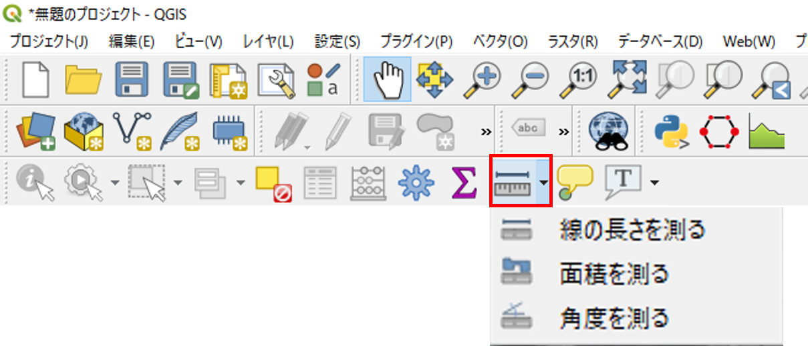
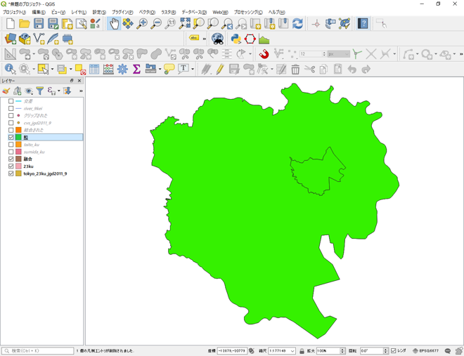

基本的な空間解析
本教材は、「基本的な空間解析」の実習用教材です。GISソフトウェア（QGIS）を用いた、地物の計測、ディゾルブ、クリップなどの空間解析手法について解説しています。講義用教材として、地理情報科学教育用スライド（GIScスライド）の4章が参考になります。
Menu
実習用データ
実習をはじめる前に、tokyoとshinobazuをダウンロードしてください。
課題_基本量の測定と空間オブジェクトの選択
GISでは、データの形状や属性情報を用いて、地物の長さや面積を計測することができます。ここでは、東京都23区の行政区域と地理院タイル（空中写真・衛星画像）を用いて、不忍池の周長と面積の計測を行います。QGISでの計測は、手動のものと自動のものがあり、以下では両方の手法を解説します。
東京都23区の境界データを先に読み込んだ後に、ブラウザパネルのXYZタイルの追加から、地理院タイル（空中写真・衛星画像）を読み込んで下さい。

手動で、長さor面積を計測する方法
計測ツールをクリックし、線の長さを測るを選択する。

不忍池の周長を測定
池の外周を縁取るように、点を打ち、最初の点と重なったところで右クリックすると周長が計算できる。

不忍池の面積を測定
池の外周を縁取るように、点を打ち、最初の点と重なったところで右クリックすると面積が計算できる。

フィールド演算から、長さor面積を計算する方法
shinobazuのポリゴンを読み込み、周長と面積を計算する。

- 属性テーブルを開き、編集モードに切り替える。
- フィールド計算機を開く。
新規フィールドを作成し、フィールド演算を行う。

- 「新しいフィールドを作る」にチェックする。
- フィールド名： perimeter
- 出力フィールドタイプ： real
- 出力フィールド幅： 10 ※任意で変更可
- 精度： 5 ※任意で変更可
- 関数： ジオメトリから$perimeterをダブルクリックする。※式に$perimeterが表示される。
- ※今回は周長なので$perimeterを選択する。
- ※線長を計測する場合には、$lengthを使用する。
- OKをクリックする。 ※面積の計測には、同じ手順で、$areaを使用する。
周長(length)と面積(area)のフィールドがつくられる。

フィールド計算を用いた計算
フィールド計算機では、様々な関数による計算を行うことができる。以下では、よく利用される関数を紹介したものである。
| 関数名 | 処理内容 |
|---|---|
| $length | 線長 |
| $area | 面積 |
| $geometry | ジオメトリ |
| $x | x座標 |
| $y | y座標 |
| $id | 連番 |
空間オブジェクトの選択
以下では、空間オブジェクトの選択の例として、台東区を検索する手法について解説しています。
地図から選択する場合、選択ボタンを利用する。レイヤウィンドウで対象レイヤをクリックし、青色になっているのを確認したのち、地物選択をクリックする。地図上で、台東区の場所をクリックすると、色が黄色（選択色）になる。

属性テーブルから、選択したエリアの情報を表示することができる。

- 属性テーブルを開き選択した地物を表示する。
- 地図で選択した地物のみ表示される。
その他の空間データの操作
GISでは、データの位置、形状、属性を用いて新たにデータを作成することができます。以下では、マージ（複数のデータを1つに結合）、ディゾルブ（属性を用いてデータを融合する）、クリップ（重なっているデータを指定し、特定の範囲を切り取る）について解説します。マージ、ディゾルブ、クリップの詳しい説明は、地理情報科学教育用スライド（GIScスライド）の4章を参照してください。
※あらかじめ、新規にフォルダを作成し、台東区と墨田区のシェープファイルを移動して下さい。シェープファイルは複数のデータで一つのファイルであるため、移動の際はすべてを動かすようにして下さい（.shpファイルのみ移動すると、データが表示できない）。
台東区と墨田区のポリゴンをマージ(Merge)する
空間選択から作成した台東区と墨田区のポリゴンデータをQGISで読み込む。ベクタ＞データマネージメントツール＞複数のシェープファイルを一つに結合するからマージする。

- ポリゴンを選択する。
- ブラウズから入力ディレクトリを選択する。
- ブラウズから出力するシェープファイルの保存する場所と名前を入力する。
- OKをクリックする。
台東区と墨田区がマージされ、一つのポリゴンになった。

マージしたポリゴンをデイゾルブ(Dissolve)する
ベクタ＞空間演算ツール＞融合からディゾルブを行う(町丁目界のないポリゴンの作成)。

- 入力レイヤを選択する。
- ディゾルブフィールドを指定する（融合フィールドは、属性が統一されている行を選択する）
- ブラウズから、出力場所と名前を入力する。
- 実行をクリックする。
町丁目界がなくなり、単純なポリゴンが作成できた。

点データポリゴンでクリップ(Clip)する
ベクタ＞空間演算ツール＞クリップ からクリップを行う（対象エリアにあるレイヤの切り取り）。
23区のコンビニデータを読み込む。

- 入力レイヤをポイントにする。
- オーバーレイヤを融合にする。
- ブラウズから、出力場所と名前を入力する。
- 実行をクリックする。 ※入力レイヤ： 切り取りたいレイヤ。 クリップレイヤ： クリップに使うレイヤ。
台東区と墨田区にあるコンビニが抽出できた。

オーバーレイ分析
オーバーレイ分析は、空間データを重ね合わせブール演算をもとに領域を抽出する手法である。以下では、インターセクトとユニオンの手法について解説している。インターセクトとユニオンの詳しい説明は、地理情報科学教育用スライド（GIScスライド）の4章を参照してください。
インターセクト(Intersect)
国土数値情報の河川レイヤを用いて、東京の河川データを読み込み、インターセクトし(Intersect)別のポリゴンを作成する。ベクター＞空間演算ツール＞交差からインターセクトを実行する。

- 入力ベクタレイヤを河川にする。
- 交差レイヤを融合にする。
- ブラウズから、出力場所と名前を入力する。
- 実行をクリックする。
江東区と墨田区に交差する河川レイヤが新規に作成できた。
※属性情報をチェックしクリップとの違いを確認する。属性情報は更新されないのでラインの長さやポリゴンやの面積は、再計算が必要な点に注意する。

ユニオン (Union)
台東区と墨田区のポリゴンを一つのポリゴンに統合する。
ベクター＞空間演算ツール＞統合からユニオンを行う。

- 入力レイヤをディゾルブした23区のポリゴンにする 。
- オーバーレイヤを台東区と墨田区のポリゴンにする。
- ブラウズから、出力場所と名前を入力する。
- 実行をクリックする。
台東区と墨田区のポリゴンを一つのポリゴンに統合できた。 
この教材の課題ページ_基本的な空間解析へ進む
ライセンスに関する注意事項
本教材で利用しているキャプチャ画像の出典やクレジットについては、その他のライセンスについてよりご確認ください。